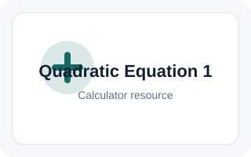
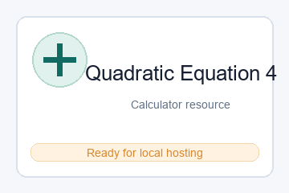

Quadratic Formula Calculator
The calculator below solves the quadratic equation of
In algebra, a quadratic equation is any polynomial equation of the second degree with the following form:
ax2 + bx + c = 0
where x is an unknown, a is referred to as the quadratic coefficient, b the linear coefficient, and c the constant. The numerals a, b, and c are coefficients of the equation, and they represent known numbers. For example, a cannot be 0, or the equation would be linear rather than quadratic. A quadratic equation can be solved in multiple ways, including factoring, using the quadratic formula, completing the square, or graphing. Only the use of the quadratic formula, as well as the basics of completing the square, will be discussed here (since the derivation of the formula involves completing the square). Below is the quadratic formula, as well as its derivation.

Derivation of the Quadratic Formula
| ax2 + bx + c = 0 |
| |||||||||||
| ||||||||||||
| ||||||||||||
From this point, it is possible to complete the square using the relationship that:
x2 + bx + c = (x - h)2 + k
Continuing the derivation using this relationship:
| Simplify | |||||||||||||||||||||
| Square root both sides | |||||||||||||||||||||
| Solve for x | |||||||||||||||||||||
| ||||||||||||||||||||||
Recall that the ± exists as a function of computing a square root, making both positive and negative roots solutions of the quadratic equation. The x values found through the quadratic formula are roots of the quadratic equation that represent the x values where any parabola crosses the x-axis. Furthermore, the quadratic formula also provides the axis of symmetry of the parabola. This is demonstrated by the graph provided below. Note that the quadratic formula actually has many real-world applications, such as calculating areas, projectile trajectories, and speed, among others.
